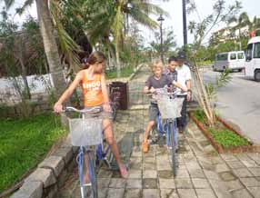
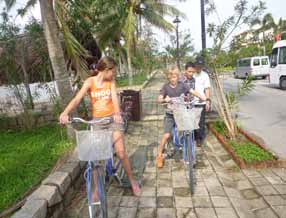

FamilieRejser - inden du bestiller
 


Vores familierejser er kulturrejser, der er tilrettelagt for både børn og voksne. På vores familierejser rejser i
sammen med jeres egen lokale, engelsktalende familieguide.
I tilrettelæggelsen af vores familierejser har vi taget højde for, at både børn og voksne skal opleve den store
verden sammen.
Rejserne er opdelt i dage med kulturoplevelser og dage med ren afslapning ved en strand eller på hoteller
med et stort aktivitetsudbud. Rejserne er udviklet af børnefamilier, der ved, hvad der skal til for at gøre en
rejse med børn til en succes. På familierejser er der forskellige behov, der skal tilgodeses og vi har derfor
gjort en del ud af, at både du og dine børn oplever den fremmede verden i jeres tempo
Vi rejser til et eksotisk, spændende land, hvor I får et dybere indblik i landets kultur, end man traditionelt
gør. Alle kan være med. Og det er altid oplevelserne og underholdningen, der er i centrum. Specielt udvalgte
rejseledere sikrer, at aktiviteterne foregår i øjenhøjde med både de voksne og børnene.
Programmet for Rejsen
Familierejserne foregår individuelt for jeres familie, derfor bestemmer I, hvornår I vil rejse. Priserne er uden fly til og fra destinationen, alt andet er inkluderet. Når I finder den rejse, der passer jer kontakter I os mht fly - så vil vi søge efter den bedste flyforbindelse til jer. Alle vores familierejser kan tilpasses så de matcher jeres behov og ønsker.
At rejse med sine børn er en gave
“Jeg har rejst hele mit liv og husker, hvordan mine forældre for mange år
siden tog min søster og mig til fjerne og eksotiske rejsemål. Derfor var det
helt naturligt, da jeg selv fik børn, at de skulle med ud og opleve verden”,
siger direktør for Horisont Rejser, Peter Frederiksen, der står bag bureauets
familierejser.
Vores familierejser henvender sig direkte til familier med børn, og det er
bl.a. Peters erfaringer fra rejser med sine egne børn, der ligger til grund for
udvælgelsen og sammensætningen af familierejserne.
Rejsen med børn
Mange børnefamilier ønsker, at tage på ferie med deres børn, men har svært ved at overskue det og få tid til at planlægge det hele. Derfor gribes der ofte til den nemme løsning, der betyder swimmingpool og all-inclusive. Vores familierejser forener den afslappede familieferie med indhold på rejsen - for både børn og voksne.
Fly på rejsen
Rejserne tilrettelægges specielt til jeres familie, I bestemmer derfor, hvornår det passer jer at rejse. Derfor er der ikke som udgangspunkt fly med i prisen, idet fly kan variere i pris afhængigt af afrejsetidspunktet


Kontakt os for at få den bedste pris på fly til og fra destinationen. Når vi vælger fly til jer tager vi højde for, at I rejser med børn.
Der er tænkt på det hele
Er du træt af at skulle tilrettelægge det hele selv? Det kan for de fleste
familier være rigtigt svært at vælge, hvor lang tid man skal bruge et
sted i forhold til et andet - og hvilken strand og by egner sig nu bedst
til vores familie. Derfor nyder du godt af vores ekspertise i at rejse med
børn og de destinationer, hvor vi sender jeres familie til. Det er jeres garanti
for, at I får en god rejse uden bekymringer for om hotelbookingnen
nu gik igennem, og om det hotel, I har booket, nu også er så godt, som I
forventer
Vi giver jer tryghed på rejsen, for vi har tilrettelagt det hele for jer. Det
program, som vi har på vores hjemmeside, er vores bedste bud på en
familierejse. Men ikke allle familier er ens, derfor er der plads til, at vi
skræddersyer rejsen, så den passer præcis til jeres ønsker og budget.
Det kan ikke være nemmere. Det er bare om, at komme afsted. Bestil nedenunder her